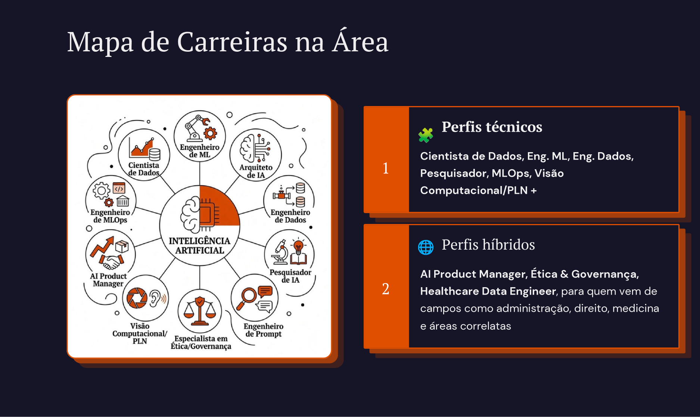
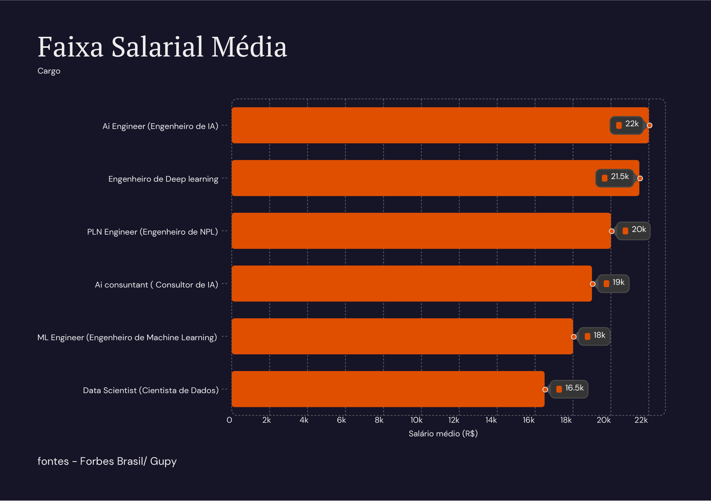
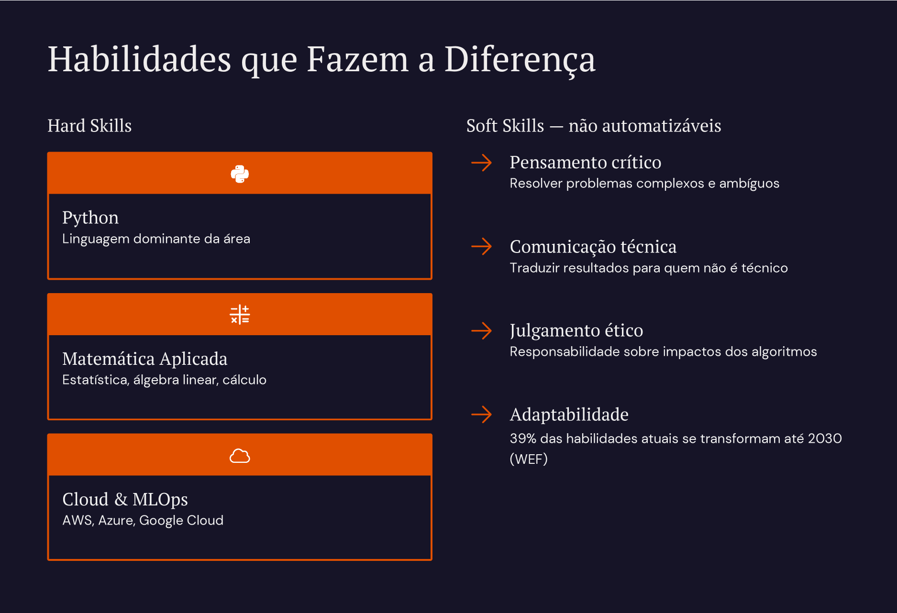
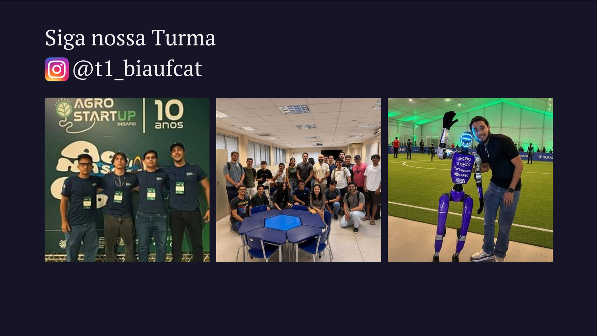

Slide 01 — Capa do Mapeamento
Slide 02 — Introdução ao Mercado

Slide 03 — Mapeamento de Carreiras

Slide 04 — Competências Chave
Slide 05 — Oportunidades & Formação

Slide 06 — Horizonte de Atuação
Slide 07 — Metodologia & Fontes

Slide 08 — Conclusão & Referências